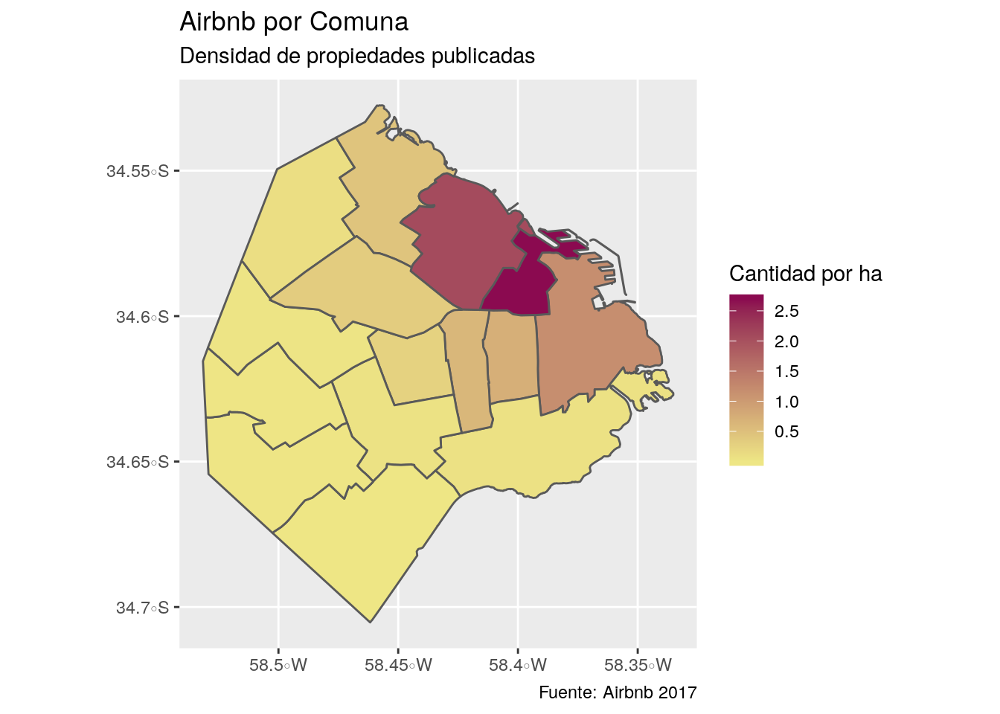
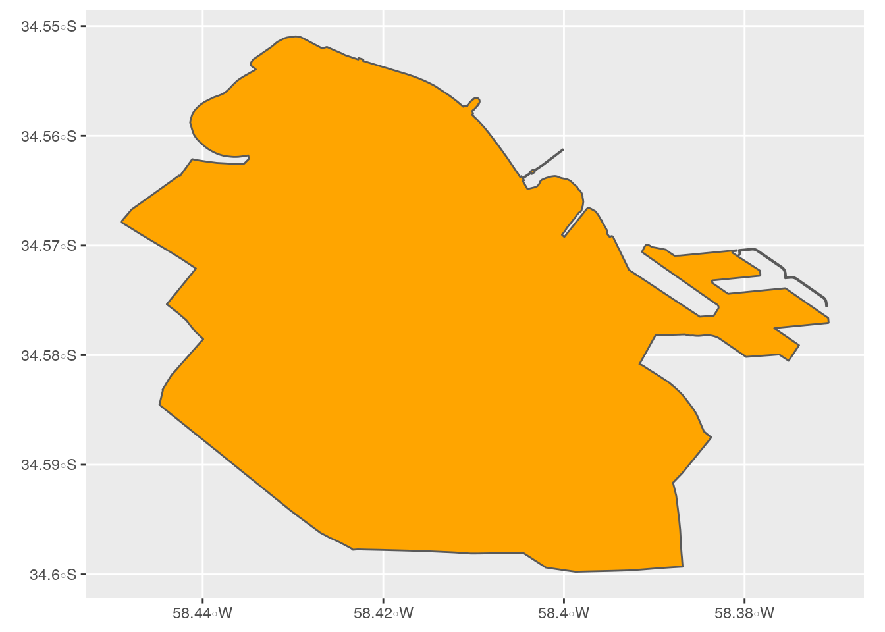
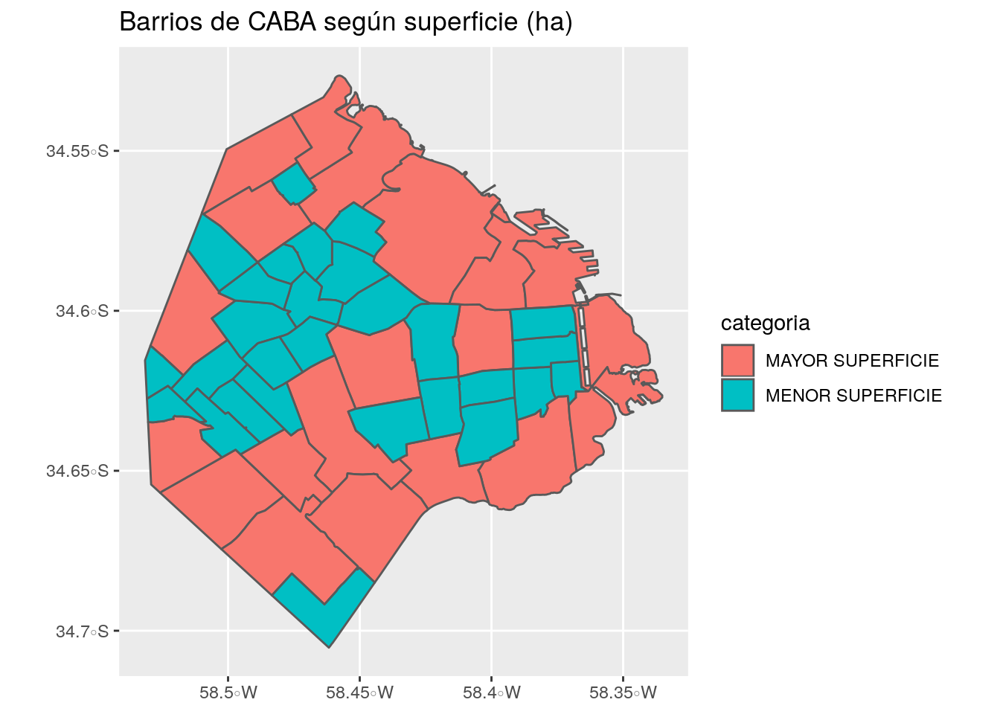
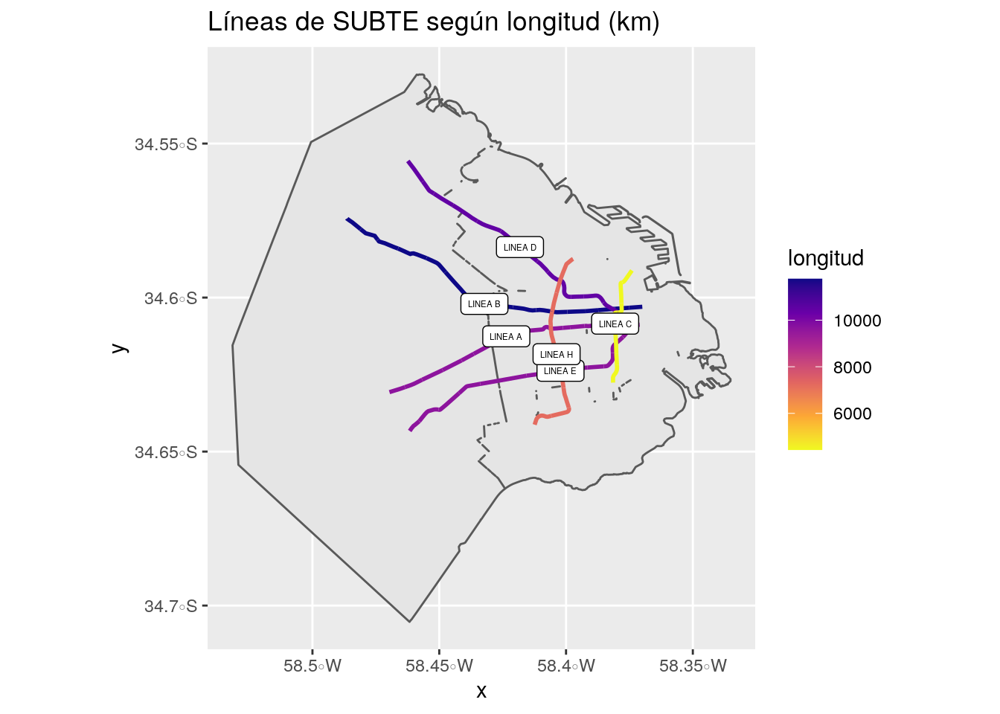

Capítulo 2 Acceso a información urbana georeferenciada en repositorios online
OpenStreetMap es un servicio de mapas online que publica información contribuida en forma libre por más de un millón de voluntarios, que benefician a los 5,5 millones de usuarios de la plataforma.
Los contribuidores más entusiastas mapean barrios completos utilizando herramientas GPS para enviar información local completa, actualizada y precisa a OpenStreetMap. Varias empresas y entidades públicas que producen información geográfica también contribuyen al permitir que sus datos sean incluidos. Existen equipos profesionales de contribuidores que que se coordinan para agregar y mantener actualizada información georeferenciada de límites políticos, calles, edificios, negocios y otros puntos de interés; en ocasiones empleados por compañías que dependen de OpenStreetMap para el “mapa base” de sus productos, como mapbox.com y carto.com.
Toda la información disponible en OpenStreetMap puede ser descargada y reutilizada por cualquier persona, ya sea accediendo al mapa online, obteniendo una copia completa de la base de datos, o accediendo a los datos vía API.
2.1 OpenStreetMap desde R
Utilizaremos osmdata, un paquete de R que permite acceder a los datos de OpenStreetMap (OSM de aquí en más) con sus atributos, geometría y posición.

Como siempre, si no tenemos aún el paquete lo instalamos:
Y lo activamos junto a otros paquetes que vamos a utilizar:
library(osmdata)
library(tidyverse) # nuestra navaja suiza para manipulación y visualización de datos
library(sf) # para procesar info espacial
library(leaflet) # Para generar mapas interactivos2.1.1 Definiendo el lugar
Antes de descargar información, definimos el lugar que queremos consultar. Éste puede ser un barrio, un municipio, un país, un continente… en éste caso, lo intentaremos con la ciudad de Rosario.
Las funciones de osmdata nos permiten realizar consultas a Overpass (http://overpass-api.de/), una interfaz que permite extraer información de la base de datos global de OpenStreetMap. Overpass requiere que se especifique una “bounding box”, es decir las coordenadas de un rectángulo que abarque la zona de interés.
Podemos obtener la bounding box de cualquier lugar con la función getbb():
## min max
## x -60.78326 -60.61167
## y -33.03487 -32.86965Con getbb() también podemos obtener un polígono con los límites políticos, las fronteras exactas, de un lugar. Esto es muy útil para realizar mapas, o para filtrar la información que obtendremos luego para quedarnos sólo con la que corresponda a nuestra ciudad de interés, descartando la de áreas aledañas:
Para asegurarnos de que tenemos el lugar que queremos, y no otro de nombre similar en alguna otra parte del mundo, lo verificamos en un mapa rápido provisto vía leaflet:
Luce bien, así que continuamos.
2.1.2 Extrayendo información de OSM
El siguiente paso es utilizar la función add_osm_feature() para especificar los datos que queremos descargar. Esto requiere conocer las palabras clave con las que se identifican los registras en la base de OSM, que permiten indicar con gran detalle el tipo de datos georeferenciados que queremos: ya sean áreas de parques públicos, posición de oficinas de correo o cajeros automáticos, vías de ferrocarril… u otro, en un larguísimo etcétera que se puede consultar en https://wiki.openstreetmap.org/wiki/Map_Features
En este caso vamos a solicitar todas las vías de circulación (calles, avenidas, autopistas, etc) de la ciudad. En la base de datos de OSM todas aparecen con la clave “highway”.
Observemos que lo único que hemos obtenido hasta ahora es la definición de una consulta (qué y en dónde), pero aun no descargamos ningún dato:
## $bbox
## [1] "-33.0348662,-60.7832623,-32.8696532,-60.6116695"
##
## $prefix
## [1] "[out:xml][timeout:25];\n(\n"
##
## $suffix
## [1] ");\n(._;>;);\nout body;"
##
## $features
## [1] " [\"highway\"]"
##
## attr(,"class")
## [1] "list" "overpass_query"Es sólo la definición de una consulta a la base de datos de OpenStreetMap: “Todas las calles (objetos con clave”highway“) dentro de éste rectángulo (que sabemos, corresponde a Rosario)”. Para hacer efectiva la consulta y descargar los datos, la pasamos por la función osmdata_sf() que recolecta lo que buscamos y lo entrega en forma de dataset espacial:
La descarga de información para una ciudad grande puede tomar varios minutos, y más aún la de un área metropolitana (o país, o continente, etc) así que es normal esperar un poco en ésta parte.
En cuanto se completa, ya tenemos calles:
La consulta devolvió toda la información de puntos, líneas y polígonos disponibles en la base de OSM. A nos otros nos interesan las líneas, “osm_lines”, que demarcan la traza de las calles. Los registros con otras geometrías, como polígonos, pueden representar elementos asociados a las calles como bulevares o áreas de vereda que no vamos a usar por el momento.
Del conjunto de datos disponibles, extraemos el dataframe con líneas, y chequeamos los atributos disponibles. Todos han sido recopilados por la comunidad de OpenStreetMap.
## Simple feature collection with 6 features and 277 fields
## geometry type: LINESTRING
## dimension: XY
## bbox: xmin: -60.71891 ymin: -33.01829 xmax: -60.65706 ymax: -32.86627
## epsg (SRID): 4326
## proj4string: +proj=longlat +datum=WGS84 +no_defs
## osm_id name abandoned.highway
## 10585611 10585611 Autopista Juan José Valle <NA>
## 23633084 23633084 Avenida de Circunvalación 25 de Mayo <NA>
## 23633086 23633086 Puente Nuestra Señora del Rosario <NA>
## 23633100 23633100 Avenida de Circunvalación 25 de Mayo <NA>
## 23633101 23633101 Avenida de Circunvalación 25 de Mayo <NA>
## 23644546 23644546 Avenida de Circunvalación 25 de Mayo <NA>
## abandoned.railway.left abandoned.surface abutters access access.lanes
## 10585611 <NA> <NA> <NA> <NA> <NA>
## 23633084 <NA> <NA> <NA> <NA> <NA>
## 23633086 <NA> <NA> <NA> <NA> <NA>
## 23633100 <NA> <NA> <NA> <NA> <NA>
## 23633101 <NA> <NA> <NA> <NA> <NA>
## 23644546 <NA> <NA> <NA> <NA> <NA>
## addr.housenumber addr.postcode addr.street agricultural
## 10585611 <NA> <NA> <NA> <NA>
## 23633084 <NA> <NA> <NA> <NA>
## 23633086 <NA> <NA> <NA> <NA>
## 23633100 <NA> <NA> <NA> <NA>
## 23633101 <NA> <NA> <NA> <NA>
## 23644546 <NA> <NA> <NA> <NA>
## alt_name amenity area barrier bench bicycle
## 10585611 Ruta Nacional 9 <NA> <NA> <NA> <NA> <NA>
## 23633084 Doctor Constantino Razzetti <NA> <NA> <NA> <NA> <NA>
## 23633086 <NA> <NA> <NA> <NA> <NA> <NA>
## 23633100 Doctor Constantino Razzetti <NA> <NA> <NA> <NA> <NA>
## 23633101 Doctor Constantino Razzetti <NA> <NA> <NA> <NA> <NA>
## 23644546 Doctor Constantino Razzetti <NA> <NA> <NA> <NA> <NA>
## bicycle.lanes bicycle.oneway bicycle_road bin bridge bridge.name
## 10585611 <NA> <NA> <NA> <NA> <NA> <NA>
## 23633084 <NA> <NA> <NA> <NA> <NA> <NA>
## 23633086 <NA> <NA> <NA> <NA> cantilever <NA>
## 23633100 <NA> <NA> <NA> <NA> yes <NA>
## 23633101 <NA> <NA> <NA> <NA> <NA> <NA>
## 23644546 <NA> <NA> <NA> <NA> viaduct <NA>
## bridge.structure bridge.support building bus bus.lanes bus_bay
## 10585611 <NA> <NA> <NA> <NA> <NA> <NA>
## 23633084 <NA> <NA> <NA> <NA> <NA> <NA>
## 23633086 beam pylon <NA> <NA> <NA> <NA>
## 23633100 <NA> <NA> <NA> <NA> <NA> <NA>
## 23633101 <NA> <NA> <NA> <NA> <NA> <NA>
## 23644546 <NA> <NA> <NA> <NA> <NA> <NA>
## busway.left busway.right change.backward change.forward change.lanes
## 10585611 <NA> <NA> <NA> <NA> <NA>
## 23633084 <NA> <NA> <NA> <NA> <NA>
## 23633086 <NA> <NA> <NA> <NA> <NA>
## 23633100 <NA> <NA> <NA> <NA> <NA>
## 23633101 <NA> <NA> <NA> <NA> <NA>
## 23644546 <NA> <NA> <NA> <NA> <NA>
## change.lanes.backward change.lanes.forward construction
## 10585611 <NA> <NA> <NA>
## 23633084 <NA> <NA> <NA>
## 23633086 <NA> <NA> <NA>
## 23633100 <NA> <NA> <NA>
## 23633101 <NA> <NA> <NA>
## 23644546 <NA> <NA> <NA>
## construction.cycleway.left construction.highway construction.lanes
## 10585611 <NA> <NA> <NA>
## 23633084 <NA> <NA> <NA>
## 23633086 <NA> <NA> <NA>
## 23633100 <NA> <NA> <NA>
## 23633101 <NA> <NA> <NA>
## 23644546 <NA> <NA> <NA>
## construction.maxspeed construction.name construction.oneway
## 10585611 <NA> <NA> <NA>
## 23633084 <NA> <NA> <NA>
## 23633086 <NA> <NA> <NA>
## 23633100 <NA> <NA> <NA>
## 23633101 <NA> <NA> <NA>
## 23644546 <NA> <NA> <NA>
## construction.surface contact.website conveying covered crossing
## 10585611 <NA> <NA> <NA> <NA> <NA>
## 23633084 <NA> <NA> <NA> <NA> <NA>
## 23633086 <NA> <NA> <NA> <NA> <NA>
## 23633100 <NA> <NA> <NA> <NA> <NA>
## 23633101 <NA> <NA> <NA> <NA> <NA>
## 23644546 <NA> <NA> <NA> <NA> <NA>
## crossing_ref cutting cycleway cycleway.left cycleway.left.oneway
## 10585611 <NA> <NA> <NA> <NA> <NA>
## 23633084 <NA> <NA> <NA> <NA> <NA>
## 23633086 <NA> <NA> <NA> <NA> <NA>
## 23633100 <NA> <NA> <NA> <NA> <NA>
## 23633101 <NA> <NA> <NA> <NA> <NA>
## 23644546 <NA> <NA> <NA> <NA> <NA>
## cycleway.left.surface cycleway.right description description.cycleway
## 10585611 <NA> <NA> <NA> <NA>
## 23633084 <NA> <NA> <NA> <NA>
## 23633086 <NA> <NA> <NA> <NA>
## 23633100 <NA> <NA> <NA> <NA>
## 23633101 <NA> <NA> <NA> <NA>
## 23644546 <NA> <NA> <NA> <NA>
## designation destination destination.backward destination.forward
## 10585611 <NA> <NA> <NA> <NA>
## 23633084 <NA> <NA> <NA> <NA>
## 23633086 <NA> Victoria RN174 <NA> <NA>
## 23633100 <NA> <NA> <NA> <NA>
## 23633101 <NA> <NA> <NA> <NA>
## 23644546 <NA> <NA> <NA> <NA>
## destination.lanes destination.ref destination.ref.forward
## 10585611 <NA> <NA> <NA>
## 23633084 <NA> <NA> <NA>
## 23633086 <NA> <NA> <NA>
## 23633100 Victoria|Victoria|Rosario <NA> <NA>
## 23633101 Victoria|Victoria|Rosario <NA> <NA>
## 23644546 <NA> <NA> <NA>
## destination.ref.lanes destination.street
## 10585611 <NA> <NA>
## 23633084 <NA> <NA>
## 23633086 <NA> <NA>
## 23633100 RN174|RN174|RN11 <NA>
## 23633101 RN174|RN174|RN11 <NA>
## 23644546 <NA> <NA>
## destination.street.lanes
## 10585611 <NA>
## 23633084 <NA>
## 23633086 <NA>
## 23633100 <NA>
## 23633101 Puente Rosario - Victoria|Puente Rosario - Victoria|Bulevar General José Rondeau
## 23644546 <NA>
## destination.symbol destination.symbol.forward destination.symbol.lanes
## 10585611 <NA> <NA> <NA>
## 23633084 <NA> <NA> <NA>
## 23633086 <NA> <NA> <NA>
## 23633100 <NA> <NA> bridge|bridge|centre
## 23633101 <NA> <NA> bridge|bridge|centre
## 23644546 <NA> <NA> <NA>
## destination.to distance disused disused.highway disused.maxspeed
## 10585611 <NA> <NA> <NA> <NA> <NA>
## 23633084 <NA> <NA> <NA> <NA> <NA>
## 23633086 <NA> <NA> <NA> <NA> <NA>
## 23633100 <NA> <NA> <NA> <NA> <NA>
## 23633101 <NA> <NA> <NA> <NA> <NA>
## 23644546 <NA> <NA> <NA> <NA> <NA>
## disused.turn.lanes.backward drinking_water embankment embedded_rails
## 10585611 <NA> <NA> <NA> <NA>
## 23633084 <NA> <NA> yes <NA>
## 23633086 <NA> <NA> <NA> <NA>
## 23633100 <NA> <NA> <NA> <NA>
## 23633101 <NA> <NA> <NA> <NA>
## 23644546 <NA> <NA> <NA> <NA>
## emergency emergency.lanes fence_type fixme flood_prone floor.material
## 10585611 <NA> <NA> <NA> <NA> <NA> <NA>
## 23633084 <NA> <NA> <NA> <NA> <NA> <NA>
## 23633086 <NA> <NA> <NA> <NA> <NA> <NA>
## 23633100 <NA> <NA> <NA> <NA> <NA> <NA>
## 23633101 <NA> <NA> <NA> <NA> <NA> <NA>
## 23644546 <NA> <NA> <NA> <NA> <NA> <NA>
## foot foot.lanes footway golf golf_cart goods handrail handrail.center
## 10585611 <NA> <NA> <NA> <NA> <NA> <NA> <NA> <NA>
## 23633084 <NA> <NA> <NA> <NA> <NA> <NA> <NA> <NA>
## 23633086 <NA> <NA> <NA> <NA> <NA> <NA> <NA> <NA>
## 23633100 <NA> <NA> <NA> <NA> <NA> <NA> <NA> <NA>
## 23633101 <NA> <NA> <NA> <NA> <NA> <NA> <NA> <NA>
## 23644546 <NA> <NA> <NA> <NA> <NA> <NA> <NA> <NA>
## handrail.left handrail.right hazard height hgv highway historic
## 10585611 <NA> <NA> <NA> <NA> <NA> motorway <NA>
## 23633084 <NA> <NA> <NA> <NA> <NA> motorway <NA>
## 23633086 <NA> <NA> <NA> <NA> <NA> motorway <NA>
## 23633100 <NA> <NA> <NA> <NA> <NA> motorway <NA>
## 23633101 <NA> <NA> <NA> <NA> <NA> motorway <NA>
## 23644546 <NA> <NA> <NA> <NA> <NA> motorway <NA>
## horse hov incline indoor indoor.highway int_name internet_access
## 10585611 <NA> <NA> <NA> <NA> <NA> <NA> <NA>
## 23633084 <NA> <NA> <NA> <NA> <NA> <NA> <NA>
## 23633086 <NA> <NA> <NA> <NA> <NA> <NA> <NA>
## 23633100 <NA> <NA> <NA> <NA> <NA> <NA> <NA>
## 23633101 <NA> <NA> <NA> <NA> <NA> <NA> <NA>
## 23644546 <NA> <NA> <NA> <NA> <NA> <NA> <NA>
## internet_access.fee internet_access.operator junction kerb landcover
## 10585611 <NA> <NA> <NA> <NA> <NA>
## 23633084 <NA> <NA> <NA> <NA> <NA>
## 23633086 <NA> <NA> <NA> <NA> <NA>
## 23633100 <NA> <NA> <NA> <NA> <NA>
## 23633101 <NA> <NA> <NA> <NA> <NA>
## 23644546 <NA> <NA> <NA> <NA> <NA>
## landuse lanes lanes.backward lanes.bicycle lanes.bus lanes.forward
## 10585611 <NA> 2 <NA> <NA> <NA> <NA>
## 23633084 <NA> 3 <NA> <NA> <NA> <NA>
## 23633086 <NA> 2 <NA> <NA> <NA> <NA>
## 23633100 <NA> 3 <NA> <NA> <NA> <NA>
## 23633101 <NA> 3 <NA> <NA> <NA> <NA>
## 23644546 <NA> 3 <NA> <NA> <NA> <NA>
## lanes.psv lanes.psv.conditional layer leisure level lit lit.type
## 10585611 <NA> <NA> <NA> <NA> <NA> <NA> <NA>
## 23633084 <NA> <NA> <NA> <NA> <NA> yes <NA>
## 23633086 <NA> <NA> 2 <NA> <NA> <NA> <NA>
## 23633100 <NA> <NA> 1 <NA> <NA> yes <NA>
## 23633101 <NA> <NA> <NA> <NA> <NA> yes <NA>
## 23644546 <NA> <NA> 1 <NA> <NA> yes <NA>
## loc_ref man_made material maxheight maxheight.physical maxspeed
## 10585611 <NA> <NA> <NA> 4.5 <NA> 120
## 23633084 <NA> <NA> <NA> <NA> <NA> 100
## 23633086 <NA> <NA> <NA> <NA> <NA> 80
## 23633100 <NA> <NA> <NA> <NA> <NA> 100
## 23633101 <NA> <NA> <NA> <NA> <NA> 100
## 23644546 <NA> <NA> <NA> <NA> <NA> 100
## maxspeed.bus maxspeed.hgv maxspeed.lanes maxspeed.type memorial
## 10585611 <NA> <NA> <NA> <NA> <NA>
## 23633084 90 80 <NA> <NA> <NA>
## 23633086 <NA> 60 <NA> <NA> <NA>
## 23633100 90 80 <NA> <NA> <NA>
## 23633101 90 80 <NA> <NA> <NA>
## 23644546 90 80 <NA> <NA> <NA>
## minspeed mooring motor_vehicle motor_vehicle.conditional
## 10585611 <NA> <NA> <NA> <NA>
## 23633084 60 <NA> <NA> <NA>
## 23633086 55 <NA> <NA> <NA>
## 23633100 60 <NA> <NA> <NA>
## 23633101 60 <NA> <NA> <NA>
## 23644546 60 <NA> <NA> <NA>
## motor_vehicle.lanes motorcar motorcycle motorroad mtb.scale
## 10585611 <NA> <NA> <NA> <NA> <NA>
## 23633084 <NA> <NA> <NA> yes <NA>
## 23633086 <NA> <NA> <NA> <NA> <NA>
## 23633100 <NA> <NA> <NA> yes <NA>
## 23633101 <NA> <NA> <NA> yes <NA>
## 23644546 <NA> <NA> <NA> yes <NA>
## mtb.scale.uphill name.bridge name.etymology.wikidata natural network
## 10585611 <NA> <NA> <NA> <NA> <NA>
## 23633084 <NA> <NA> <NA> <NA> <NA>
## 23633086 <NA> <NA> <NA> <NA> <NA>
## 23633100 <NA> <NA> <NA> <NA> <NA>
## 23633101 <NA> <NA> <NA> <NA> <NA>
## 23644546 <NA> <NA> <NA> <NA> <NA>
## noname note obstacle.wheelchair
## 10585611 <NA> <NA> <NA>
## 23633084 <NA> <NA> <NA>
## 23633086 <NA> <NA> <NA>
## 23633100 <NA> <NA> <NA>
## 23633101 <NA> <NA> <NA>
## 23644546 <NA> <NA> <NA>
## official_name
## 10585611 Autopista Teniente General Juan José Valle
## 23633084 <NA>
## 23633086 <NA>
## 23633100 <NA>
## 23633101 <NA>
## 23644546 <NA>
## old_name old_ref oneway
## 10585611 Autopista Teniente General Pedro Aramburu <NA> yes
## 23633084 <NA> <NA> yes
## 23633086 <NA> <NA> yes
## 23633100 <NA> <NA> yes
## 23633101 <NA> <NA> yes
## 23644546 <NA> <NA> yes
## oneway.bicycle opening_hours operator overtaking park_ride parking
## 10585611 <NA> <NA> <NA> <NA> <NA> <NA>
## 23633084 <NA> <NA> <NA> forward <NA> <NA>
## 23633086 <NA> <NA> <NA> yes <NA> <NA>
## 23633100 <NA> <NA> <NA> no <NA> <NA>
## 23633101 <NA> <NA> <NA> <NA> <NA> <NA>
## 23644546 <NA> <NA> <NA> forward <NA> <NA>
## parking.condition.both parking.condition.both.maxstay
## 10585611 <NA> <NA>
## 23633084 <NA> <NA>
## 23633086 <NA> <NA>
## 23633100 <NA> <NA>
## 23633101 <NA> <NA>
## 23644546 <NA> <NA>
## parking.condition.both.residents parking.condition.both.time_interval
## 10585611 <NA> <NA>
## 23633084 <NA> <NA>
## 23633086 <NA> <NA>
## 23633100 <NA> <NA>
## 23633101 <NA> <NA>
## 23644546 <NA> <NA>
## parking.condition.left parking.condition.left.maxstay
## 10585611 <NA> <NA>
## 23633084 <NA> <NA>
## 23633086 <NA> <NA>
## 23633100 <NA> <NA>
## 23633101 <NA> <NA>
## 23644546 <NA> <NA>
## parking.condition.left.vehicles parking.condition.right
## 10585611 <NA> <NA>
## 23633084 <NA> <NA>
## 23633086 <NA> <NA>
## 23633100 <NA> <NA>
## 23633101 <NA> <NA>
## 23644546 <NA> <NA>
## parking.condition.right.maxstay parking.condition.right.time_interval
## 10585611 <NA> <NA>
## 23633084 <NA> <NA>
## 23633086 <NA> <NA>
## 23633100 <NA> <NA>
## 23633101 <NA> <NA>
## 23644546 <NA> <NA>
## parking.condition.right.vehicles parking.lane.both parking.lane.left
## 10585611 <NA> <NA> <NA>
## 23633084 <NA> <NA> no_stopping
## 23633086 <NA> <NA> <NA>
## 23633100 <NA> no_stopping <NA>
## 23633101 <NA> <NA> no_stopping
## 23644546 <NA> <NA> no_stopping
## parking.lane.right parking.lane.right.diagonal parking.lanes.left
## 10585611 <NA> <NA> <NA>
## 23633084 no_parking <NA> <NA>
## 23633086 <NA> <NA> <NA>
## 23633100 <NA> <NA> <NA>
## 23633101 no_parking <NA> <NA>
## 23644546 no_parking <NA> <NA>
## passenger_information_display picnic_table placement
## 10585611 <NA> <NA> <NA>
## 23633084 <NA> <NA> <NA>
## 23633086 <NA> <NA> <NA>
## 23633100 <NA> <NA> <NA>
## 23633101 <NA> <NA> <NA>
## 23644546 <NA> <NA> <NA>
## placement.backward placement.forward proposed proposed.highway
## 10585611 <NA> <NA> <NA> <NA>
## 23633084 <NA> <NA> <NA> <NA>
## 23633086 <NA> <NA> <NA> <NA>
## 23633100 <NA> <NA> <NA> <NA>
## 23633101 <NA> <NA> <NA> <NA>
## 23644546 <NA> <NA> <NA> <NA>
## proposed.lanes proposed.maxspeed proposed.name proposed.oneway
## 10585611 <NA> <NA> <NA> <NA>
## 23633084 <NA> <NA> <NA> <NA>
## 23633086 <NA> <NA> <NA> <NA>
## 23633100 <NA> <NA> <NA> <NA>
## 23633101 <NA> <NA> <NA> <NA>
## 23644546 <NA> <NA> <NA> <NA>
## proposed.surface psv psv.lanes public_transport ramp ramp.bicycle
## 10585611 <NA> <NA> <NA> <NA> <NA> <NA>
## 23633084 <NA> <NA> <NA> <NA> <NA> <NA>
## 23633086 <NA> <NA> <NA> <NA> <NA> <NA>
## 23633100 <NA> <NA> <NA> <NA> <NA> <NA>
## 23633101 <NA> <NA> <NA> <NA> <NA> <NA>
## 23644546 <NA> <NA> <NA> <NA> <NA> <NA>
## ramp.luggage ramp.stroller ramp.wheelchair ref reg_name
## 10585611 <NA> <NA> <NA> RN9 <NA>
## 23633084 <NA> <NA> <NA> RNA008 <NA>
## 23633086 <NA> <NA> <NA> RN174 <NA>
## 23633100 <NA> <NA> <NA> RNA008 <NA>
## 23633101 <NA> <NA> <NA> RNA008 <NA>
## 23644546 <NA> <NA> <NA> RNA008 <NA>
## seamark.bridge.category segregated service share_taxi shelter
## 10585611 <NA> <NA> <NA> <NA> <NA>
## 23633084 <NA> <NA> <NA> <NA> <NA>
## 23633086 suspension <NA> <NA> <NA> <NA>
## 23633100 <NA> <NA> <NA> <NA> <NA>
## 23633101 <NA> <NA> <NA> <NA> <NA>
## 23644546 <NA> <NA> <NA> <NA> <NA>
## short_name shoulder shoulder.access.bicycle shoulder.line
## 10585611 Juan José Valle <NA> <NA> <NA>
## 23633084 Avenida Circunvalación <NA> <NA> <NA>
## 23633086 <NA> <NA> <NA> <NA>
## 23633100 Avenida Circunvalación <NA> <NA> <NA>
## 23633101 Avenida Circunvalación <NA> <NA> <NA>
## 23644546 Avenida Circunvalación <NA> <NA> <NA>
## shoulder.right shoulder.right.surface shoulder.surface sidewalk
## 10585611 <NA> <NA> <NA> <NA>
## 23633084 <NA> <NA> <NA> <NA>
## 23633086 <NA> <NA> <NA> <NA>
## 23633100 <NA> <NA> <NA> <NA>
## 23633101 <NA> <NA> <NA> <NA>
## 23644546 <NA> <NA> <NA> <NA>
## sidewalk.both.surface sidewalk.oneway sidewalk.right
## 10585611 <NA> <NA> <NA>
## 23633084 <NA> <NA> <NA>
## 23633086 <NA> <NA> <NA>
## 23633100 <NA> <NA> <NA>
## 23633101 <NA> <NA> <NA>
## 23644546 <NA> <NA> <NA>
## sidewalk.right.surface smoothness sorting_name source source.bridge
## 10585611 <NA> <NA> <NA> <NA> <NA>
## 23633084 <NA> <NA> <NA> <NA> <NA>
## 23633086 <NA> <NA> <NA> <NA> <NA>
## 23633100 <NA> <NA> <NA> <NA> <NA>
## 23633101 <NA> <NA> <NA> <NA> <NA>
## 23644546 <NA> <NA> <NA> <NA> <NA>
## source.disused source.hgv source.highway source.imagery source.lanes
## 10585611 <NA> <NA> <NA> <NA> <NA>
## 23633084 <NA> <NA> <NA> <NA> <NA>
## 23633086 <NA> <NA> <NA> <NA> <NA>
## 23633100 <NA> <NA> <NA> <NA> <NA>
## 23633101 <NA> <NA> <NA> <NA> <NA>
## 23644546 <NA> <NA> <NA> <NA> <NA>
## source.maxheight source.maxspeed source.minspeed
## 10585611 <NA> <NA> <NA>
## 23633084 <NA> sign sign
## 23633086 <NA> <NA> sign;Mapillary
## 23633100 <NA> sign sign
## 23633101 <NA> sign sign
## 23644546 <NA> sign sign
## source.motor_vehicle.conditional
## 10585611 <NA>
## 23633084 <NA>
## 23633086 <NA>
## 23633100 <NA>
## 23633101 <NA>
## 23644546 <NA>
## source.name
## 10585611 http://infoleg.mecon.gov.ar/infolegInternet/anexos/225000-229999/225220/norma.htm
## 23633084 <NA>
## 23633086 <NA>
## 23633100 <NA>
## 23633101 <NA>
## 23644546 <NA>
## source.oneway source.parking.lane.both source.parking.lanes.both
## 10585611 <NA> <NA> <NA>
## 23633084 <NA> <NA> <NA>
## 23633086 <NA> <NA> <NA>
## 23633100 <NA> <NA> <NA>
## 23633101 <NA> <NA> <NA>
## 23644546 <NA> <NA> <NA>
## source.proposed source.proposed.lanes
## 10585611 <NA> <NA>
## 23633084 <NA> <NA>
## 23633086 <NA> <NA>
## 23633100 <NA> <NA>
## 23633101 <NA> <NA>
## 23644546 <NA> <NA>
## source.ref source.surface
## 10585611 http://forum.openstreetmap.org/viewtopic.php?id=31749 <NA>
## 23633084 <NA> <NA>
## 23633086 <NA> <NA>
## 23633100 <NA> <NA>
## 23633101 <NA> <NA>
## 23644546 <NA> <NA>
## sport step_count supervised surface surface.bicycle surface.lanes
## 10585611 <NA> <NA> <NA> asphalt <NA> <NA>
## 23633084 <NA> <NA> <NA> asphalt <NA> <NA>
## 23633086 <NA> <NA> <NA> asphalt <NA> <NA>
## 23633100 <NA> <NA> <NA> asphalt <NA> <NA>
## 23633101 <NA> <NA> <NA> asphalt <NA> <NA>
## 23644546 <NA> <NA> <NA> asphalt <NA> <NA>
## surface.lanes.backward surface.lanes.forward surveillance
## 10585611 <NA> <NA> <NA>
## 23633084 <NA> <NA> <NA>
## 23633086 <NA> <NA> <NA>
## 23633100 <NA> <NA> <NA>
## 23633101 <NA> <NA> <NA>
## 23644546 <NA> <NA> <NA>
## surveillance.type tactile_paving taxi taxi.lanes toilets toll tourism
## 10585611 <NA> <NA> <NA> <NA> <NA> <NA> <NA>
## 23633084 <NA> <NA> <NA> <NA> <NA> <NA> <NA>
## 23633086 <NA> <NA> <NA> <NA> <NA> yes <NA>
## 23633100 <NA> <NA> <NA> <NA> <NA> <NA> <NA>
## 23633101 <NA> <NA> <NA> <NA> <NA> <NA> <NA>
## 23644546 <NA> <NA> <NA> <NA> <NA> <NA> <NA>
## tourist_bus tracktype traffic traffic_calming train trolley_wire
## 10585611 <NA> <NA> <NA> <NA> <NA> <NA>
## 23633084 <NA> <NA> <NA> <NA> <NA> <NA>
## 23633086 <NA> <NA> <NA> <NA> <NA> <NA>
## 23633100 <NA> <NA> <NA> <NA> <NA> <NA>
## 23633101 <NA> <NA> <NA> <NA> <NA> <NA>
## 23644546 <NA> <NA> <NA> <NA> <NA> <NA>
## trolleybus tunnel turn turn.lanes
## 10585611 <NA> <NA> <NA> <NA>
## 23633084 <NA> <NA> <NA> <NA>
## 23633086 <NA> <NA> <NA> <NA>
## 23633100 <NA> <NA> <NA> through|through|slight_right
## 23633101 <NA> <NA> <NA> through|through|slight_right
## 23644546 <NA> <NA> <NA> <NA>
## turn.lanes.backward turn.lanes.forward vehicle vehicle.conditional
## 10585611 <NA> <NA> <NA> <NA>
## 23633084 <NA> <NA> <NA> <NA>
## 23633086 <NA> <NA> <NA> <NA>
## 23633100 <NA> <NA> <NA> <NA>
## 23633101 <NA> <NA> <NA> <NA>
## 23644546 <NA> <NA> <NA> <NA>
## water wheelchair wheelchair.description width wikidata
## 10585611 <NA> <NA> <NA> <NA> <NA>
## 23633084 <NA> <NA> <NA> <NA> <NA>
## 23633086 <NA> <NA> <NA> <NA> <NA>
## 23633100 <NA> <NA> <NA> <NA> <NA>
## 23633101 <NA> <NA> <NA> <NA> <NA>
## 23644546 <NA> <NA> <NA> <NA> <NA>
## wikimedia_commons wikipedia geometry
## 10585611 <NA> <NA> LINESTRING (-60.66396 -33.0...
## 23633084 <NA> <NA> LINESTRING (-60.71845 -32.8...
## 23633086 <NA> <NA> LINESTRING (-60.68246 -32.8...
## 23633100 <NA> <NA> LINESTRING (-60.70536 -32.8...
## 23633101 <NA> <NA> LINESTRING (-60.7047 -32.87...
## 23644546 <NA> <NA> LINESTRING (-60.71891 -32.8...2.1.3 Visualizando los resultados
Dado que las calles han sido descargadas en formato sf, podemos visualizarlas con ggplot: y geom_sf:

Las calles exceden los límites de Rosario, ya que tenemos todos los datos encontrados dentro del rectángulo de la bounding box. Para “recortar” los datos conservando solo las calles de la ciudad, podemos extraer su intersección con el polígono de límites que obtuvimos antes.
Ahora si!

Podemos visualizar atributos de las calles, por ejemplo el de la velocidad máxima permitida, que está presente para casi todas. Pero antes va a ser necesario limpiar un poco los datos… como es usual.
Los dataframes en formato sf que crea osmdata tienen todos los valores en formato texto, incluso aquellos que son números como maxspeed (la velocidad máxima), o lanes, la cantidad de carriles. Lo arreglamos:
calles <- calles %>%
mutate(maxspeed = as.numeric(maxspeed),
lanes = ifelse(is.na(lanes), 1, as.numeric(lanes)))Con eso tenemos limpias las variables de velocidad máxima y ancho en carriles. Listos para visualizar.
ggplot(calles) +
geom_sf(aes(color = maxspeed), alpha = 0.5) +
scale_color_viridis_c() +
theme_void() +
labs(title = "Rosario",
subtitle = "Vías de circulación",
caption = "fuente: OpenStreetMap",
color = "velocidad máxima")
O podemos revisar la posición de las avenidas:
ggplot() +
geom_sf(data = calles,
color = "gray40", alpha = .5) +
geom_sf(data = filter(calles, str_detect(name, "Avenida")),
color = "salmon") +
theme_void() +
labs(title = "Rosario",
subtitle = "Avenidas",
caption = "fuente: OpenStreetMap")
2.2 Un ejercicio más: ¡Bares en el barrio!
Imaginemos que estamos interesados en identificar y caracterizas los bares presentes en un barrio determinado, como San Telmo en la Ciudad de Buenos Aires. Como punto de partida, podemos consultar la base de OSM a ver que encontramos.
Comenzamos por definir nuestra área de interés
bbox_st <- getbb('San Telmo, Ciudad Autonoma de Buenos Aires')
bbox_st_poly = getbb('San Telmo, Ciudad Autonoma de Buenos Aires', format_out = "sf_polygon")
leaflet(bbox_st_poly) %>%
addTiles() %>%
addPolygons()Habiendo verificado que tenemos el área correcta, armamos una consulta por la grilla de calles, y la ejecutamos.
Y también descargamos información sobre la posición de bares. Habiendo revisado https://wiki.openstreetmap.org/wiki/Map_Features, sabemos que para obtener bares necesitamos la categoría “amenity”, y el subtipo “bar”. En términos de OSM, key = "amenity", value = "bar":
Extraemos la información dentro de los límites exactos del barrio.
A diferencia de las calles, que aparecen en la geometría de líneas, para los bares nos interesan los puntos.
SanTelmo_calles <- st_intersection(SanTelmo_calles$osm_lines, bbox_st_poly)
SanTelmo_bares <- st_intersection(SanTelmo_bares$osm_points, bbox_st_poly)Y listos para mapear! De paso, resaltamos aquellos donde se baila tango, al colorear según el atributo “dance.style”, incluido en los datos.
ggplot() +
geom_sf(data = SanTelmo_calles,
color = "darkslateblue") +
geom_sf(data = SanTelmo_bares,
aes(color = dance.style)) +
geom_sf_label(data = SanTelmo_bares,
aes(label = name), size = 2) +
theme_void() +
labs(title = "San Telmo",
subtitle = "Bares",
caption = "fuente: OpenStreetMap",
color = "Ofrecen baile")
Casi listo. Antes de darnos por satisfechos, tenemos que mejorar la ubicación de las etiquetas, que se superponen por la proximidad de los lugares.
Por el momento geom_sf_label() -la geometría de ggplot que permite graficar etiquetas de datos sf- no incluye la útil opción de correr la posición de las etiquetas en forma automática para que no se solapen. Por suerte, existe un pequeño paquete, ggsflabel, que provee la funcionalidad que necesitamos.
Podemos instalar el paquete directo desde el repositorio de su autor:
Y ahora, usamos geom_sf_label_repel() para la versión final de nuestro mapa de bares en San Telmo:
ggplot() +
geom_sf(data = SanTelmo_calles,
color = "darkslateblue") +
geom_sf(data = SanTelmo_bares,
aes(color = dance.style)) +
geom_sf_label_repel(data = SanTelmo_bares,
aes(label = name), size = 2) +
theme_void() +
labs(title = "San Telmo",
subtitle = "Bares",
caption = "fuente: OpenStreetMap",
color = "Ofrecen baile")2.5 Conectando R a Twitter
Para acceder a los sistemas de Twitter necesitamos obtener una autorización, identificándonos con nuestro usuario en la red. Este paso es inevitable, ya que sin una autorización Twitter no responderá nuestras consultas. Por suerte, el trámite para obtener acceso es inmediato, y como resultado obtendremos una serie de códigos de identificación, conocidos en su conjunto como API keys.
2.5.1 Obteniendo autorización
El primer paso es, si no lo hemos hecho aún, crear un usuario de Twitter en https://twitter.com/signup. Luego seguimos los pasos de éste instructivo https://towardsdatascience.com/access-data-from-twitter-api-using-r-and-or-python-b8ac342d3efe. Nota: Twitter nos preguntará cómo se llama la “app” para la cual estamos solicitand acceso. No vamos a crear ninguna app, pero aún así tenemos que elegir un nombre; usemos “RTWEET” (aunque podría ser cualquier otro). Al completar los pasos estaremos en poder de cuatro códigos: Consumer Key, Consumer Secret, Access Token y Access Token Secret. Tomemos nota de ellos.
2.5.2 Acceso a Twitter via R: el paquete rtweet
rtweet provee un conjunto de funciones que nos facilitan interactuar con Twitter. Si no lo tenemos instalado, lo conseguimos vía:
Y lo activamos junto al resto de los paquetes que vamos a usar.
A continuación, le pasamos a rtweet los datos de autorización que conseguimos antes para crear un “token” (en la jerga de Twitter, es una especie de comprobante de que estamos autorizados a acceder a los datos)
# El nombre que le asgnamos a la app en el formulario de autorización
appname <- "RTWEET"
## consumer key (en el ejemplo no es una clave real, usar la verdadera)
consumer_key <- "la_secuencia_de_caracteres_de_nuestra_consumer_key"
## consumer secret (en el ejemplo no es un clave real, usar la verdadera)
consumer_secret <- "la_secuencia_de_caracteres_de_nuestra_consumer_secret"
## consumer key (en el ejemplo no es una clave real, usar la verdadera)
access_token <- "la_secuencia_de_caracteres_de_nuestro_access_token"
## consumer secret (en el ejemplo no es un clave real, usar la verdadera)
access_secret <- "la_secuencia_de_caracteres_de_nuestro_access_secret"
twitter_token <- create_token(
app = appname,
consumer_key = consumer_key,
consumer_secret = consumer_secret,
access_token = access_token,
access_secret = access_secret)Al ejecutar esas líneas se abrirá una ventana en nuestro navegador solicitando autorizar el acceso vía R -lo aceptamos, por supuesto.
Ahora si, estamos listos para realizar consultas en el archivo de Twitter. La función search_tweets() permite obtener tweets que cumplan los requisitos que fijemos. Por ejemplo, para buscar tweets que contienen el término “inflacion”, usamos:
El parámetro n = 3000 es para limitar la búsqueda a los primeros 3000 tweets hallados.
También puede hacerse una búsqueda por múltiples términos. Por ejemplo, buscando “ciudad+universitaria” hace que twitter devuelva resultados donde las palabras aparecen juntas y en ese orden; como alternativa, al optar por “ciudad universitaria” se obtienen tweets donde aparezcan esas palabras en cualquier parte del texto, sin importar su orden o si aparecen contiguas.
El resultado es un dataframe de 3000 observaciones -el número máximo que habíamos solicitado- y 88 columnas. rtweet incluye users_data(), una función que muestra detalles de los usuarios que han producido los tweets que capturamos:
## # A tibble: 6 x 20
## user_id screen_name name location description url protected followers_count
## <chr> <chr> <chr> <chr> <chr> <chr> <lgl> <int>
## 1 257472… pablosebas… Seba… Tucumán… Ingeniero … <NA> FALSE 279
## 2 960382… PieNPi Pabl… Argenti… Underdog-R… <NA> FALSE 288
## 3 106816… Abeldealme… Abel… El Bols… Profesor d… <NA> FALSE 1471
## 4 442015… JulianColo… Juli… Mar Del… "UNMDP Der… http… FALSE 1954
## 5 837485… Yorsha7 Yors… Argenti… Morocha Ar… <NA> FALSE 331
## 6 102506… Sofia99473… Sofia "" "" <NA> FALSE 3
## # … with 12 more variables: friends_count <int>, listed_count <int>,
## # statuses_count <int>, favourites_count <int>, account_created_at <dttm>,
## # verified <lgl>, profile_url <chr>, profile_expanded_url <chr>,
## # account_lang <lgl>, profile_banner_url <chr>, profile_background_url <chr>,
## # profile_image_url <chr>También podemos explorar los resultados en base a las 88 variables disponibles. Revisemos los nombres:
## [1] "user_id" "status_id"
## [3] "created_at" "screen_name"
## [5] "text" "source"
## [7] "display_text_width" "reply_to_status_id"
## [9] "reply_to_user_id" "reply_to_screen_name"
## [11] "is_quote" "is_retweet"
## [13] "favorite_count" "retweet_count"
## [15] "quote_count" "reply_count"
## [17] "hashtags" "symbols"
## [19] "urls_url" "urls_t.co"
## [21] "urls_expanded_url" "media_url"
## [23] "media_t.co" "media_expanded_url"
## [25] "media_type" "ext_media_url"
## [27] "ext_media_t.co" "ext_media_expanded_url"
## [29] "ext_media_type" "mentions_user_id"
## [31] "mentions_screen_name" "lang"
## [33] "quoted_status_id" "quoted_text"
## [35] "quoted_created_at" "quoted_source"
## [37] "quoted_favorite_count" "quoted_retweet_count"
## [39] "quoted_user_id" "quoted_screen_name"
## [41] "quoted_name" "quoted_followers_count"
## [43] "quoted_friends_count" "quoted_statuses_count"
## [45] "quoted_location" "quoted_description"
## [47] "quoted_verified" "retweet_status_id"
## [49] "retweet_text" "retweet_created_at"
## [51] "retweet_source" "retweet_favorite_count"
## [53] "retweet_retweet_count" "retweet_user_id"
## [55] "retweet_screen_name" "retweet_name"
## [57] "retweet_followers_count" "retweet_friends_count"
## [59] "retweet_statuses_count" "retweet_location"
## [61] "retweet_description" "retweet_verified"
## [63] "place_url" "place_name"
## [65] "place_full_name" "place_type"
## [67] "country" "country_code"
## [69] "geo_coords" "coords_coords"
## [71] "bbox_coords" "status_url"
## [73] "name" "location"
## [75] "description" "url"
## [77] "protected" "followers_count"
## [79] "friends_count" "listed_count"
## [81] "statuses_count" "favourites_count"
## [83] "account_created_at" "verified"
## [85] "profile_url" "profile_expanded_url"
## [87] "account_lang" "profile_banner_url"
## [89] "profile_background_url" "profile_image_url"Allí hay de todo para explorar.
2.5.3 Usuarios más populares
Según la cantidad de seguidores:

El gráfico muestra una distribución de “power law”, típica en los rankings de popularidad. Hay una enorme masa de usuarios con popularidad mínima (apenas un puñado de seguidores) y un número muy pequeño de usuarios que alcanza una cantidad deseguidores cientos o miles de veces superior a la de la mayoría.
Obtenemos un top 5 de los usuarios más populares (con más seguidores), su procedencia, y el contenido del tweet:
tweets %>%
top_n(5, followers_count) %>%
arrange(desc(followers_count)) %>%
select(screen_name, followers_count, location, text)## # A tibble: 6 x 4
## screen_name followers_count location text
## <chr> <int> <chr> <chr>
## 1 la_patilla 7092240 Venezuela ALnavío: Así es el fracaso de Nic…
## 2 la_patilla 7092240 Venezuela ALnavío: Así es el fracaso de Nic…
## 3 la_patilla 7092240 Venezuela ALnavío: Así es el fracaso de Nic…
## 4 la_patilla 7092240 Venezuela ALnavío: Así es el fracaso de Nic…
## 5 clarincom 2959475 Buenos Aires, … Los ferroviarios cerraron la pari…
## 6 clarincom 2959475 Buenos Aires, … El ABL porteño aumentará mensualm…2.5.4 Tweets más populares
En base a la cantidad de retweets que recibieron. Nos quedamos sólo con los tweets originales, descartando los que son retweets en si mismos (“is_retweet == TRUE”), y revisamos la distribución de sus retweets:
Otra ditribución power law. Identifiquemos el tweet original más que sumó más retweets:
tweets %>%
filter(!is_retweet) %>%
filter(retweet_count == max(retweet_count)) %>%
select(screen_name, retweet_count, followers_count, location, text)## # A tibble: 1 x 5
## screen_name retweet_count followers_count location text
## <chr> <int> <int> <chr> <chr>
## 1 beltrandelr… 80 517300 "México… Y los que no crean que lo…Nota: Si no estamos interesados en capturar retweets, podemos evitarlos al momento de consultar la base de Twitter, as’i tweets <- search_tweets(q = "inflacion", n = 500, include_rts = FALSE)
2.5.5 La hora del día a la que se producen los tweets
rtweet() provee una funció que hace facil mostrar la evolución temporal de nuestros tweets: ts_plot(). Podemos ver la frecuencia de tweets por segundo, hora, día, semana, mes o año eligiendo el parámetro correspondiente (“secondss”, “minutess”, “hours”, “days”, “weeks”, “months”, o “years”)

2.5.6 Procedencia de los usuarios
tweets %>%
ggplot() +
geom_bar(aes(location)) +
coord_flip() +
labs(title = "Procedencia de los usuarios",
x = "cantidad",
y = "ubicación")Dado que el campo “location” refleja el texto que cada usuario eligió para describir su ubicación (no se trata de las coordenadas de origen del tweet) las variabilidad es grande. Algunas escriben su país, otros su ciudad, otras su barrio… y hay quienes eligen opciones poéticas cómo “algún lugar del mundo”. En todo caso, la abundancia de opciones resulta en un gráfico muy difícil de leer.
Probamos extraer el top 10 de lugares más frecuentes, eliminando los tweets de usuarios sin datos en su atributo “location”.
tweets %>%
filter(location != "", !is.na(location)) %>%
count(location) %>%
top_n(10, n) %>%
ggplot() +
geom_col(aes(x = reorder(location, n), y = n)) +
coord_flip() +
labs(title = "Procedencia de los usuarios",
x = "ubicación",
y = "cantidad")
2.6 Escuchando tweets en tiempo real
Como alternativa a consultar el archivo “histórico” de Twitter, es posible conectar a su API de streaming, que entrega tweets en tiempo real al instante en que se producen. La función stream_tweets() permite iniciar una conección y capturar tweets hasta concluya el tiempo dispuesto por el parámetro “timeout”, expresado en segundos.
Por ejemplo, para “escuchar” el stream de Twitter por un minuto (60 segundos), y capturar mensajes que incluyan los términos accidente y tránsito:
Verificamos el resultado (sólo los campos de usuario y texto del tweet):
## # A tibble: 3 x 2
## screen_name text
## <chr> <chr>
## 1 stalinbriones Tremenda irresponsabilidad
## 2 3_xhamb3r buena farra!!!
## 3 talalata19 @sttmed @MovilidadEnv Por favor. Revisen accidente de tránsito …2.7 Capturando tweets por períodos prolongados
Cuando queremos monitorear un evento de actualidad, por ejemplo capturando tweets que mencionen una palabra o hashtag de interés, resulta necesario mantener las escucha activa durante varias horas o días. La solución para este caso es usar la función stream_tweets(), que permite iniciar un proceso de escucha de tiempo arbitrario. Dado que no se sabe que puede fallar en un proceso que dura varios días, la función se encarga de guardar los resultados en un archivo local a medida que se obtienen, y reiniciar la conexión a Twitter en forma automática si se interrumpe por algún motivo (como un corte momentáneo de acceso a internet).
La usamos así:
terminos_de_busqueda <- "accidente + tránsito"
# una semana: 60 segundos * 60 * 24 * 7
tiempo <- 60 * 60 * 24 * 7
# El archivo donde guardar los resultados en disco (tendrá formato json, así que lo usamos en el nombre de archivo)
archivo <- "busqueda_tweets.json"
stream_tweets(q = terminos_de_busqueda,
timeout = tiempo,
file_name = archivo,
parse = FALSE)Una vez que el período de captura termina, podemos leer el archivo generado.
# en el paso anterior definimos que el nombre de archivo es "busqueda_tweets_DT_VP.json"
tweets <- parse_stream("busqueda_tweets.json")Y con eso concluye el proceso. Ya estamos listos para analizar el contenido.
2.8 Capturando tweets en zonas específicas
Imaginemos ahora que queremos obtener tweets originados en un lugar en particular. En un barrio, una ciudad, o un país. Para ello podemos aprovechar que Twitter permite realizar búsquedas por área geográfica.
Por ejemeplo, iniciemos la descarga de tweets que mencionen el nombre que se le da en Buenos Aires al metro: “subte”. La clave está en que además de los términos de búsqueda vamos a especificar un radio de 20 millas (~32 km) en torno al área céntrica (el downtown) de la Ciudad:
tweets_transporte <- search_tweets(q = "subte",
geocode = "-34.603722,-58.381592,20mi",
include_rts = FALSE,
n = 100000,
retryonratelimit = TRUE)El proceso puede tomar un rato. Quien no pueda esperar, puede descargar unos resultados obtenidos previamente:
2.8.1 Extraer las coordenadas
Algunos de los tweets, aquellos que fueron publicados desde un teléfono móvil u otro dispositivo con GPS, tienen coordenadas de posición precisas (latitud y longitud). El dataframe creado por rtweet guarda la pareja de coordenadas em el campo “coords_coords”, dentro de una lista. Es decir que en lugar de un valor simple, cada elemento de la columna contiene una lista de varios valores. De manera similar, también crea otras dos columnas, “geo_coords” y “bbox_coords” que contienen datos sobre la ubicación del tweet en forma de lista.
Esto trae dos problemas:
No podemos usar los verbos de manipulación de datos con esas columnas (filter, mutate, arrange, etc) porque están diseñados para trabajar con valores atómicos, como “hola” y no listas, como (“hola”, “chau”, “sin datos”).
No podemos guardar el dataframe en formato .csv, el favorito de los que comparten datos, porque no hay forma estandarizada de indicar que algunos campos contienen una lista de datos en lugar de un valor único.
write.csvywrite_csvintentan guardar el dataframe en un archivo .csv, pero fallan al encontrar la primera columna que contiene listas.
La solución es simple: usamos la función lat_lng(), que agrega al dataframe dos columnas adicionales llamdas “lat” y “lng”, conteniendo latitud y longitud para los tweets que traen posición exacta.
Además, si quisiéramos guardar luego los datos en formato .csv, podemos descartamos los campos problemáticos -los que contienen información geográfica en forma de listas:
2.8.2 Visualizando los datos georeferenciados en un mapa interactivo
Para empezar, filtramos nuestros tweets para conservar sólo los que contienen coordenadas exactas de posición.
El resultado evidencia que los tweets georeferenciados son sólo una fracción del total que se produce:
## [1] 202Ahora vamos a llearlos a un mapa.
2.9 Mapas estáticos con ggmap
ggmap es un paquete de R que complementa a ggplot, agregando funciones que permiten adquirir y visualizar mapas en forma fácil.
Si no lo tenemos instalado, ya sabemos que hacer:
Lo activamos:
Ahora, para obtener un mapa base del área donde se encuentran los puntos que queremos mostrar, necesitamos determinar la “bounding box”: el rango de latitud y longitud que forma un rectángulo conteniendo todas las posiciones. En resumidas cuentas, se trata de los valores de latitud máxima y mínima, y de longitud máxima y mínima.
Los proveedores de mapas online suelen solicitar los valores en este orden: izquierda, abajo, derecha, arriba. Es decir, posición mas al oeste, posición mas al sur, posición mas al este, posición mas al norte.
Cuando disponemos de un dataframe con columnas de latitud y longitud, obtener la bounding box es bastante fácil:
## left bottom right top
## -58.82968 -34.84405 -58.22878 -34.42486Con eso podemos descargar un mapa del área. Como opción por defecto, ggmap solicita los mapas a Google Maps, pero ésta ha dejado de ser la alternativa ideal: desde octubre de 2018, Google exige a los usarios registrarse y proveer una tarjeta de crédito para descargar información mediante porgramas propios. Por eso vamos a usar otra de las fuentes habilitadas por ggmap, el servicio de mapas de Stamen Design.
Lo descargamos entregando la bounding box del área que nos interesa y un nivel de zoom. El nivel de zoom -un número de 1 a 20- indica el detalle que tendrá el mapa descargado. Para un área metropolitana un zoom de entre 10 y 12 es adecuado.
Para ver el resultado usamos ggmap():

Stamen ofrece varios estilos de mapa: “terrain” (usado por defecto), “terrain-background”, “terrain-labels”, “terrain-lines”, “toner”, “toner-2010”, “toner-2011”, “toner-background”, “toner-hybrid”, “toner-labels”, “toner-lines”, “toner-lite”, “watercolor”.
Probemos algunos:
mimapa_terrain_lines <- get_stamenmap(bbox, maptype = "terrain-lines", zoom = 11)
mimapa_toner_lite <- get_stamenmap(bbox, maptype = "toner-lite", zoom = 11)
mimapa_watercolor <- get_stamenmap(bbox, maptype = "watercolor", zoom = 11)
ggmap(mimapa_terrain_lines)


Cuando descargamos un mapa que vamos a usar de base para visualizar datos, siempre es una buena idea elegir una opción en escala de grises, sin colores que compitan contra los datos que proyectaremos. Probamos entonces con “toner-lite” para el mapa que usaremos de aqui en adelante.

Ahora agregamos capas de puntos mostrando la posición de los tweets. La sintaxis es la misma que aprendimos para ggplot; de hecho, ggmap es una llamada a ggplot que tras bambalinas se encarga de los ajustes necesarios para mostrar el mapa como findo. Habiendo revisado la data de Moreno, sabemos que las columnas de longitud y latitud de los puntos georeferenciados se llaman “lon” y “lat”. Al graficar los puntos, las usaremos como posición x e y respectivamente.

También podemos asignar a cada punto un color de acuerdo a la popularidad del usuario:
ggmap(mapa_BA) +
geom_point(data = tweets_transporte_geo,
aes(x = lng, y = lat, color = followers_count)) +
scale_color_distiller(palette = "Spectral")
¿Qué pasó aquí? Tenemos un escala de colores que llega hasta 600.000, en el tono rojo, pero en el mapa solo vemos puntos azules, los que indican una cantidad baja de seguidores. La explicación está en la relativa rareza de usuarios de Twitter con cientos de miles de seguidores. Dado que la inmensa mayoría de usuarios de la red sólo tienen un puñado de seguidores, ocurre que puntitos que los representan suelen tapar a los esporádicos usuarios ultra populares. Si lo que queremos es mostrar los tweets de éstos últimos, podemos recurrir a un pequeño truco. Dado que las filas de un data rame se grafican en orden, si ordenamos las observaciones en orden creciente de “followers_count” los usuarios populares serán graficados al final, garantizando que su color aparezca por encima de otros.
tweets_transporte_geo <- arrange(tweets_transporte_geo, followers_count)
ggmap(mapa_BA) +
geom_point(data = tweets_transporte_geo,
aes(x = lng, y = lat, color = followers_count)) +
scale_color_distiller(palette = "Spectral")
Tambien podemos usemos usar el tamaño de cada punto para representar la repercusión de los tweets, en base a la cantidad de “retweets” que han obtenido:
ggmap(mapa_BA) +
geom_point(data = tweets_transporte_geo,
aes(x = lng, y = lat, color = followers_count, size = retweet_count),
alpha = .5) +
scale_color_distiller(palette = "Spectral")
2.9.1 Mapas interactivos con leaflet
Con la explosión de de popularidad de los mapas online, con Google Maps al frente, se ha vuelto habitual explorar información geográfica en entornos interactivos, que permiten al usuario desplazarse libremente por la superficie terrestre y cambiar el nivel de zoom con el que se muestran los datos. Un mapa con información tan precisa como la posición de los tweets, que incluso permite ver a parcela desde donde se han emitido, se beneficia en extremo de la posibilidad de variar la escala de visualización a voluntad.
Desde R es fácil proyectar nuestros datos sobre mapas interactivos, usando el paquete leaflet. Si aún no lo tenemos en nuestro sistema, lo obtenemos mediante:
Una vez que está instalado, lo activamos
EL uso de leaflet es similar al de ggplot; uno toma un dataframe y lo muestra mediante capas que exponen distintos aspectos de la información. Para empezar, hacemos
… y no obtuvimos mucho. Tal como pasa con ggplot(), si uno no define ninguna capa de visualización, el resultado es una especie de lienzo vacío.
Siguiente paso: agregar un mapa base. Para sumar capas a un mapa de leaflet usamos " %>% " en ugar del " + " que requiere ggplot(), pero el concepto es el mismo.
Ahora está un poco mejor, nos encontramos con un mapa, pero falta que aparezcan nustros datos. Es fácil: con addMarkers() leaflet se encarga de buscar las coordenadas de cada observación, y si aparecen con algún nombre esperable, las identifica y sitúa en el mapa un pin por cada una.
Nombres esperables serían “latitude” y “longitude” o también, como en nuestro caso, “lat” y “lng”. Si las coordenadas aparecieran bajo columnas con nombres menos interpretables, se le puede aclarar a leaflet cuáles son vía paramétros.
Ya tenemos un mapa útil! Para mejorarlo, agregamos la opción de “popup”, que permite extraer información adicional cliqueando sobre un pin. Por ejemplo, el contenido del campo con el texto de cada tweet (nótese el uso de “~”, que leaflet requiere para entender que nos referimos a un campo presente en el dataframe que le pasamos).
Para sumar una dimensión más a la visualización, podemos usar el color para indicar la cantidad de seguidores del autor de cada tweet. Para codificar por color, leaflet requiere definir una paleta de colores para aplicar a nuestros datos. Al crear una paleta debemos elegir la función correspondiente al tipo de datos que vamos a mostrar: colorFactor() para variables categóricas, colorNumeric() para variabes numéricas, o colorQuantile() también para variables numéricas, pero agrupadas en cuantiles. La función requere al menos dos parámetros. Uno es “palette”, para definir los tonos a usar. Aquí funcionan nuestros amigos viridis, magma, plasma e inferno, y también las paletas Brewer, como _“Spectral_ o Accent). El parametro restante es”domain", que simplemente toma un vector con los datos que vamos a representar con la paleta.
{kind=link}
Como la cantidad de seguidores es una variable numérica, podemos usar:
Y luego la usamos en nuestro mapa:
leaflet(tweets_transporte_geo) %>%
addTiles() %>%
addCircleMarkers(popup = ~text,
color = ~paleta(followers_count))leaflet sólo permite mostrar leyendas basadas en color (no en el diamétro de los círculos), pero algo es algo. Agregamos la leyenda así:
leaflet(tweets_transporte_geo) %>%
addTiles() %>%
addCircleMarkers(radius = ~retweet_count,
popup = ~text,
color = ~paleta(followers_count)) %>%
addLegend(title = "seguidores", pal = paleta, values = ~followers_count)Esto es sólo una introducción a la producción de mapas interactivos.
Para un recorrido por muchas otras opciones disponibles con leaflet, visitar https://rstudio.github.io/leaflet/